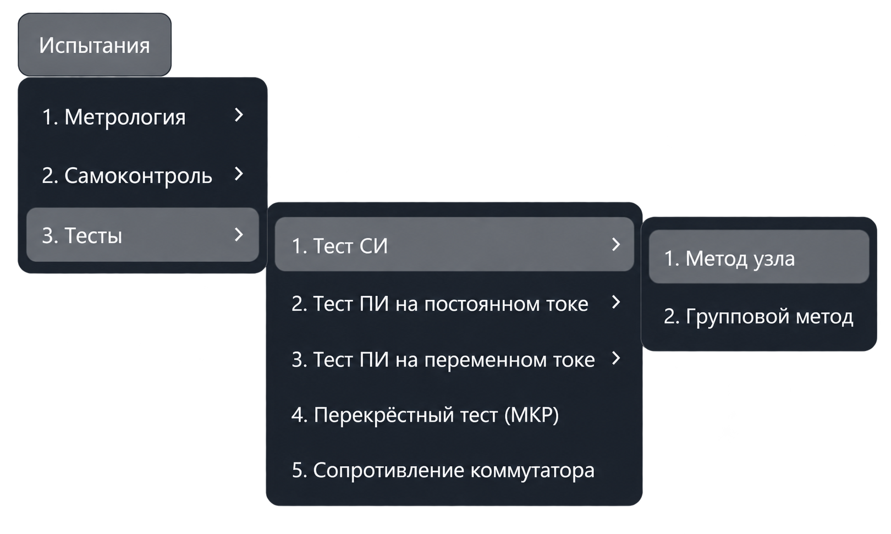
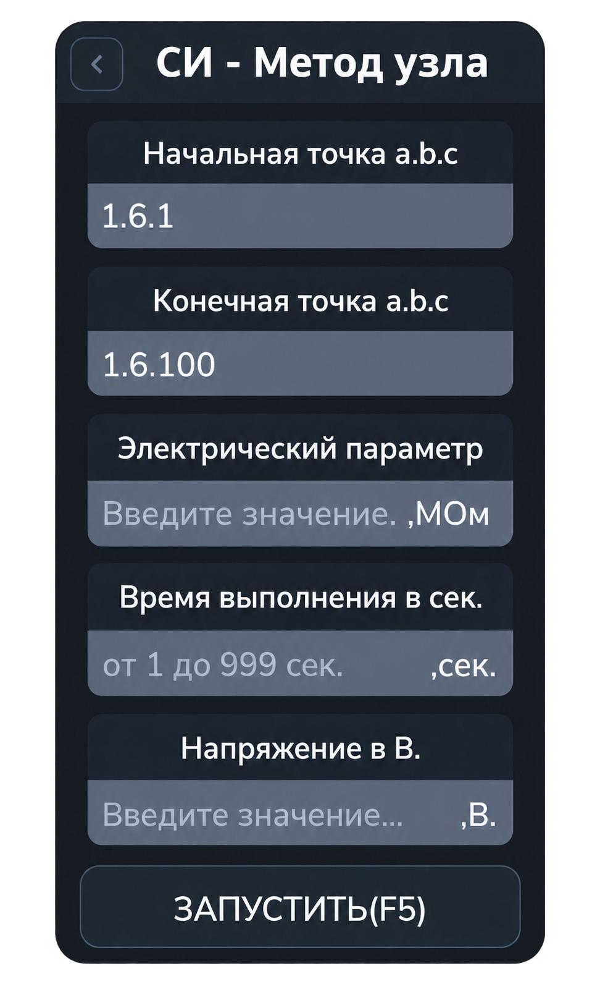

Тест СИ методом узла
Тест проверяет сопротивление изоляции каждой точки заданного диапазона относительно остальных точек этого диапазона, объединённых на общей шине. Результат сравнивается с заданным минимальным сопротивлением.
Откройте «Испытания → Тесты → Тест СИ → Метод узла». Команда открывает вкладку «СИ - Метод узла»; проверка запускается отдельно.


Параметры
| Поле | Что указать |
|---|---|
| Начальная точка a.b.c | Первую точку проверяемого диапазона. |
| Конечная точка a.b.c | Последнюю точку проверяемого диапазона. |
| Электрический параметр | Минимально допустимое сопротивление изоляции в мегаомах (МОм). |
| Время выполнения в сек. | Время одного измерения в секундах. |
| Напряжение в В. | Испытательное напряжение в вольтах. |
В адресе a.b.c указываются номер шасси, номер модуля коммутации и номер точки.
Начальная и конечная точки задают диапазон включительно, а не отдельную измеряемую пару.
Например, 1.6.1 и 1.6.100 задают точки с 1 по 100 модуля 6 шасси 1.
При диапазоне из нескольких модулей используются точки от начальной до конца первого модуля,
все точки промежуточных модулей и точки до конечной включительно в последнем модуле того же шасси.
Допустимые напряжение и время проверяются с учётом возможностей установки. Заданное время относится к отдельному измерению; общая длительность зависит от количества точек и повторов.
Порядок работы
- Откройте тест и задайте начальную и конечную точки диапазона.
- Введите минимальное сопротивление в МОм, время измерения и напряжение.
- Нажмите «Запустить» или F5 в активной вкладке.
- Следите за переключением точек и результатами измерений в протоколе.
- При сообщениях об ошибках ориентируйтесь на указанную точку и запрос приложения.
Как выполняется проверка
- Приложение проверяет ввод, подключает оборудование и подготавливает коммутацию диапазона.
- Установка переводится в режим измерения сопротивления изоляции; задаются напряжение и время измерения.
- Все точки диапазона подключаются к общей шине.
- Очередная точка переключается на противоположную шину и проверяется относительно остальных точек диапазона.
- Перед переходом дальше предыдущая точка возвращается на общую шину. Последовательность повторяется до конца диапазона.
Результаты
Для каждой точки в протокол выводятся её адрес, измеренное сопротивление и результат проверки. Значение не ниже заданного минимума считается соответствующим условию; равенство порогу допускается. При меньшем сопротивлении формируется сообщение об ошибке.
В отличие от метрологического режима СИ, здесь задаётся минимально допустимое сопротивление, а не эталон для расчёта погрешности. Верхняя граница для оценки результата не задаётся.
Другой способ проверки описан в разделе «Тест СИ групповым методом».